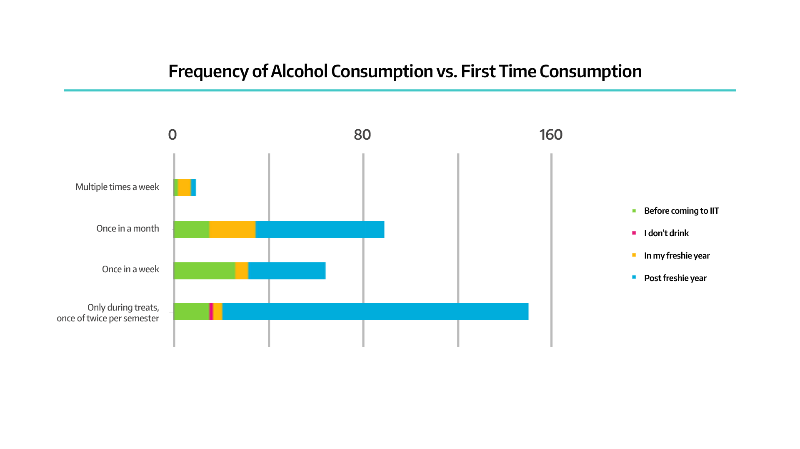

Lifestyle
Physical and Mental Fitness
Did you ever consult a psychiatrist/counselor for mental illness?

91.5% never consulted a psychiatrist for any sort of mental illness. However, 7%, although a small number, did require mental counselling for a brief period.
How physically fit are you?
11.4% considered themselves to be fitness freaks. A major fraction (64.2%) were much more liberal and were positive towards participating in physical activity once or twice a week. 18.7% of the respondents were indifferent towards physical fitness.
Alcohol
On an average, how frequently did you consume alcohol?
.png)
33.1% consumed alcohol once or twice during the semester. 30% abstained from alcohol at all costs. A visit to a bar was a once-in-a-month affair for 19.1% respondents while 13.6% agreed to consuming alcohol more than once a week.
What was your favourite place to drink?

Of the 228 respondents that did consume alcohol atleast once, Sunny was the favourite place for 33.3%. Laxmi followed closely at 29.8%. 14% found solace while consuming alcohol in their rooms itself.
Nicotine
How frequently do/did you smoke cigarettes?

“I don’t smoke”, said 72.3% seniors proudly. A majority (51.1%) of the people who smoked, smoked hardly once in two or three weeks.
Of those 92 seniors who did smoke, almost 73% started smoking after their freshmen year.
Peer Pressure
Which of the following peer pressures did you face in your stay at IIT?

35.8% of our respondents faced a peer pressure to study/learn. Almost 30% experienced peer pressure to participate in extra-curriculars or to consume alcohol.
Expenditure
Where do you peg your monthly spending?

What was the major cause of your spending?

79.5% claimed that their major cause of spending was dining outside. 9.5% attributed their spending to alcohol and other intoxicants. 7.5% respondents spent most of their money on travelling.
| <1000 | 1000-3000 | 3000-5000 | >5000 |
|---|---|---|---|
| 27 | 102 | 90 | 64 |
Bucketlist
Which of these have you ticked off your bucketlist ?

52.4% experienced the classic dream of every college student: a road trip to Goa with friends. 70% travelled ticketless on a local train. 55.7%, on being inspired by Casino Royale, have played poker/blackjack.
Which of these places have you visited during your stay at IIT-Bombay?

73% students have been to the top of VMCC as well as the serene boathouse. 62% have completed the walk-in-the-park trek to Sameer Hill. Remarkedly, 49% have never been inside Hostel 10 while 16.2% have never visited the institute's central library.